This tutorial will provides you an overview of the different main possibilities or main features for text blocks formatting. Each topic has (or should have…) also one or more more detailed pages for further customization and exploitation of options and features.
Contents
Alignment and indentation
Spacings
Indentation
Alignment
Use \startalignment[option1,…], based on \setupalign[option1,…]
-
\setuppapersize[A6] \starttext \startalignment[normal] \bold{\type{normal}} \input ward \stopalignment \blank[line] \startalignment[flushleft] \bold{\type{flushleft}} \input ward \stopalignment \blank[line] \startalignment[middle] \bold{\type{middle}} \input ward \stopalignment \blank[line] \startalignment[flushright] \bold{\type{flushright}} \input ward \stopalignment \stoptext
- 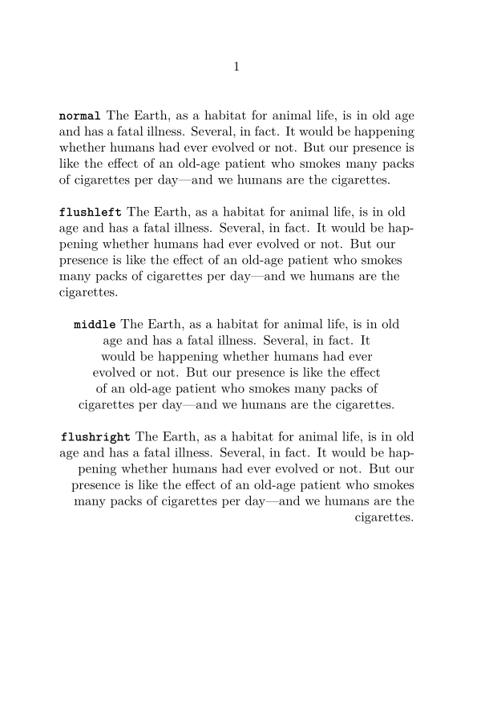
For a one line content, you can use \leftaligned, \midaligned, \rightaligned:
-
\setuppapersize[A8,landscape] \starttext \leftaligned{Hello World!} \midaligned{Hello World!} \rightaligned{Hello World!} \stoptext
- 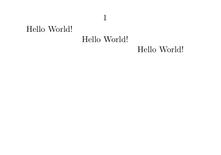
To right-align the final words of an otherwise left-aligned line, see \wordright.
Usual sets of text blocks
Lists of items
The usual itemized or bullet lists with \startitemize.
-
\setuppapersize[A7] \starttext Text before. \startitemize \item here we list the points, \item one after the other. \stopitemize Text between. \startitemize[n,packed] \item here we list the points, \item one after the other. \stopitemize Text again between. \startitemize[n,packed] \starthead{First} item \startitemize[packed] \startitem First sub-item of the first item \stopitem \startitem Second sub-item of the first item \stopitem \stopitemize \stophead \starthead{Second} item \stophead \stopitemize Text after. \stoptext
- 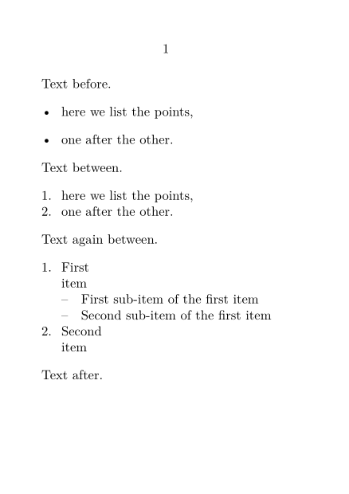
Descriptions
Descriptions allows text blocks with text labels, such as definitions, with \definedescription[Name] which allows the use of \startName \stopName.
-
\setuppapersize[A8,landscape] \starttext \definedescription[Typography] \startTypography{Kerning} represents the space between two letters. Unlike inter-letter (tracking), which places a space of equal size between each letter, kerning varies according to the pair of letters to be spaced. \stopTypography \startTypography{Line spacing} Line spacing is the space between two lines of text. \stopTypography \stoptext
- 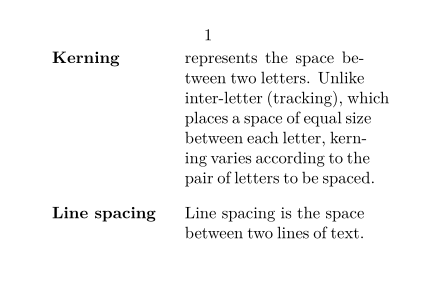
Enumeration
An enumeration is similar in principle to a description, but each text block is numbered, with \defineenumeration[Name] which allows the use of \startName \stopName. For example, for exercises:
-
\setuppapersize[A8,landscape] \starttext \defineenumeration [Exercise] \startExercise first exercise statement \stopExercise \startExercise second exercise statement \stopExercise \stoptext
- 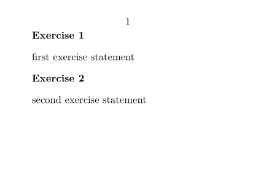
Narrower
The instances of \startnarrower ... \stopnarrower are used for text with a smaller width than the main text. It can be indented on one or both sides.
-
\setuppapersize[A6] \starttext The Gibbelins eat, as is well known, nothing less good than man. Their evil tower is joined to Terra Cognita, to the lands we know, by a bridge. \definenarrower[MyNarrow][left=1cm,right=1cm] \startMyNarrow[left,right] Their hoard is beyond reason; avarice has no use for it; they have a separate cellar for emeralds and a separate cellar for sapphires; they have filled a hole with gold and dig it up when they need it. \stopMyNarrow \blank[line] \rightaligned{—Lord Dunsany, \quote{The Hoard of the Gibbelins}, \emph{The Book of Wonder}} \stoptext
- 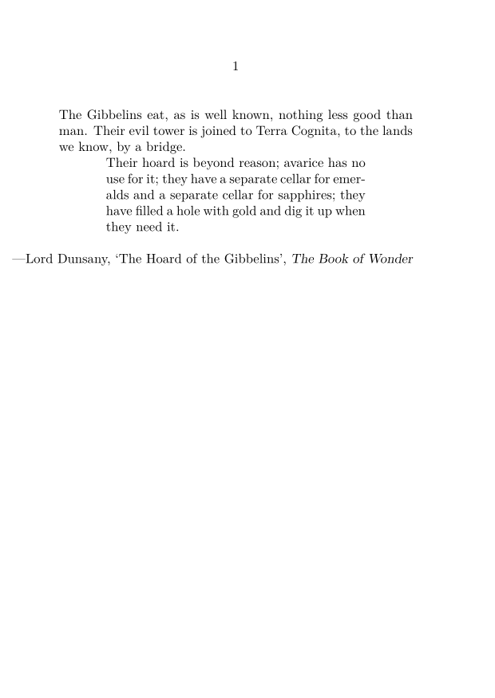
Frames
The command \framed{content} or \startframed…\stopframed, are used for adding frames, backgrounds and styling to a segment of text.
Usually we start with option align=normal to activate line breaking.
-
\setuppapersize[A7] \starttext \setupframed[align=normal] \framed{The primroses were over. Towards the edge of the wood, where the ground became open and sloped down to an old fence and a brambly ditch beyond, only a few fading patches of pale yellow still showed among the dog's mercury and oak-tree roots.} \startframed [width=5cm, background=color, backgroundcolor=middleyellow, frame=off, offset=3pt] The primroses were over. Towards the edge of the wood, where the ground became open and sloped down to an old fence and a brambly ditch beyond, only a few fading patches of pale yellow still showed among the dog's mercury and oak-tree roots. \stopframed \stoptext
- 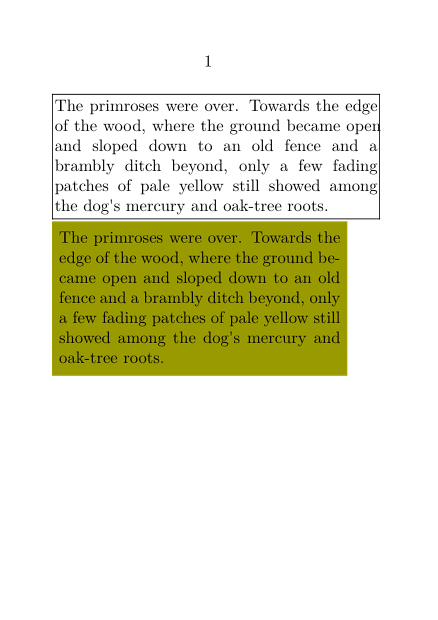
Quotes
Here you need \startquotation for quotation at block text level.
-
\setuppapersize[A7] \starttext This is how \quotation{Watership Down}, by Richard Adams, starts: \startquotation The primroses were over. Towards the edge of the wood, where the ground became open and sloped down to an old fence and a brambly ditch beyond, only a few fading patches of pale yellow still showed among the dog's mercury and oak-tree roots. On the other side of the fence, the upper part of the field was full of rabbit-holes. \stopquotation \stoptext
- 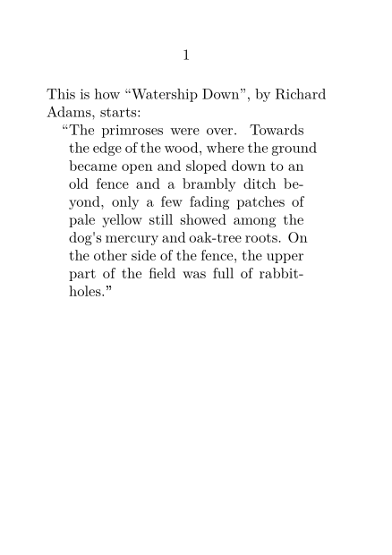
Columns
Columns is a complex features, which can be manage at the level of the text blocks, or of the whole document (currently at Text_blocks/Environments/Columns#Column_Sets.
| TODO: create this page Document layout and layers/Columns (See: To-Do List) |
To keep things simple, you can start with \startcolumns
-
\setuppapersize[A7,landscape] \setupbodyfont[8pt] \setupalign[verytolerant] \starttext \startcolumns[n=2] \input knuth \stopcolumns \stoptext
- 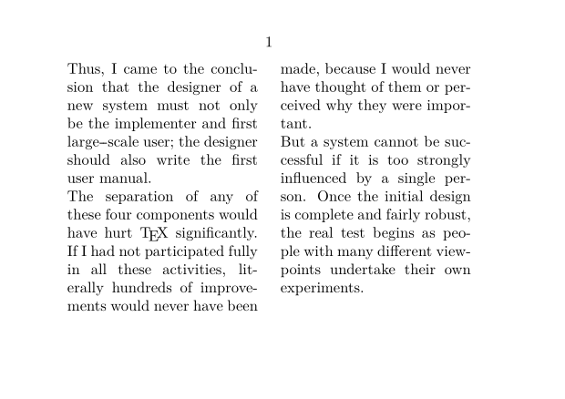
Typing (verbatim)
Within ConTeXt's typing environment (between \starttyping and \stoptyping) everything is considered as text to type, commands have no effect.
-
\starttyping This is a \test{} and everything is printed just as I write it \stoptyping
- 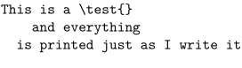
\starttyping environment have quite a range of built-in options for formatting the verbatim text.
\starttyping[option=xml] <?xml version="1.0" encoding="UTF-8"?> <text> <para>hello world</para> </text> \stoptyping
- 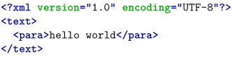
Verses
The usual way to set verse in ConTeXt is to enclose it in \startlines \stoplines, which ensures that each new line in the code produces a line break in the compiled output. Additionally, \startlines has some arguments that can be used to configure how the lines of text look, such as their indentation patterns. As usual in ConTeXt, these arguments can be separated and applied throughout the document with \setuplines (and optionally \definelines).
-
\startlines But chiefly, when the shadowy moon had shed O'er woods and waters her mysterious hue, Their passive hearts and vacant fancies fed With thoughts and aspirations strange and new, Till their brute souls with inward working bred Dark hints that in the depths of instinct grew Subjection not from Locke's associations, Nor David Hartley's doctrine of vibrations. \stoplines
- 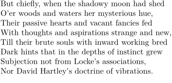
Text background
To setup blocks of text,with a specific background, allowed to flow over the pages, you will need \definetextbackground[MyTextBackEnv] and the associated \definetextbackground[MyTextBackEnv]].
-
\definepapersize[sheet][width=104mm,height=74mm] \setuppapersize[A8][sheet] \setuppaper[nx=2,ny=1] \setuparranging[XY] \showframe[edge] \setupalign[tolerant] \definetextbackground [MyTextBackEnv] [location=paragraph, background=color, backgroundcolor=lightyellow, frame=off,] \starttext Text before \startMyTextBackEnv \samplefile{knuth} \stopMyTextBackEnv Text after \stoptext
- 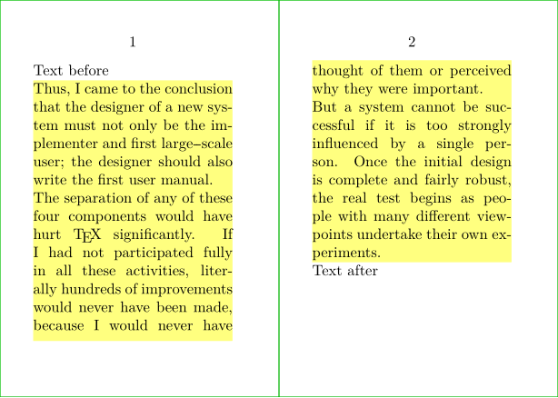
And you can also take benefit of MetaPost and MetaFun features.